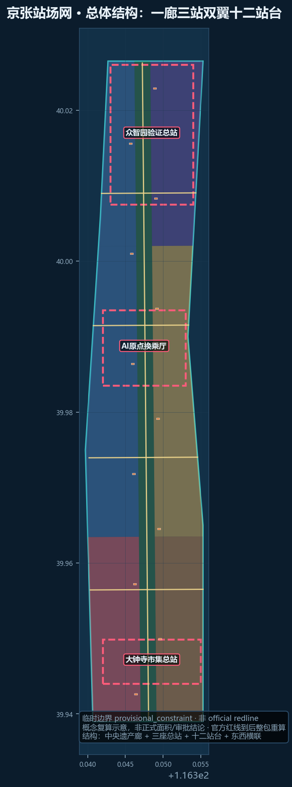
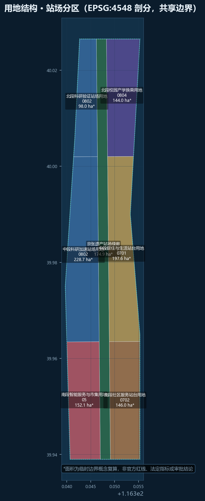
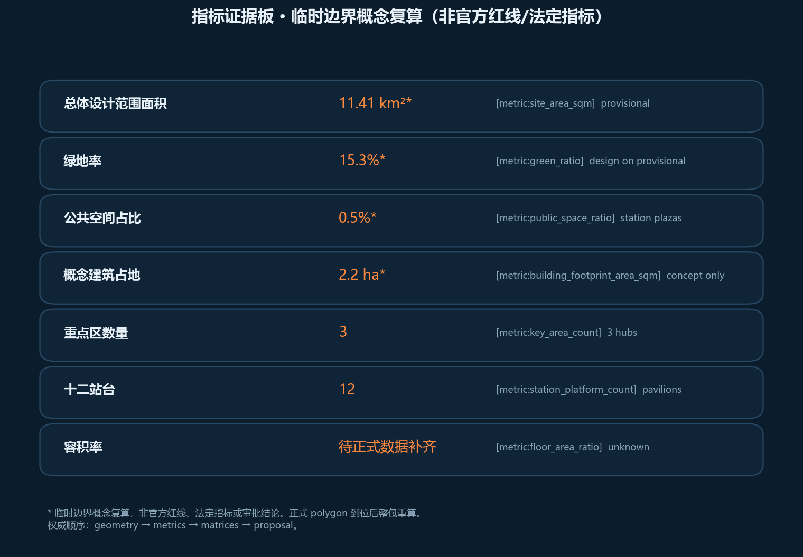

统筹研究范围
约 43.6 km²，产业与区域协同（待深化接口）
一廊三站双翼十二站台 · provisional 边界上的概念包
临时边界概念复算，非官方红线/法定指标/审批结论

* provisional recomputation
目标：确定性/空间/视觉/专业证据门通过后进入 formal review。当前边界为 provisional_constraint。
约 43.6 km²，产业与区域协同（待深化接口）
约 11.4 km² 站场网结构
三座总站详细概念
全栈测试、开源评测、治理实验
校园—社区—开发者换乘
智能消费与东西缝合


三座概念站厅 + 十二轻量站台，可逆建造。
S01–S12 覆盖慢行安全、无障碍、陪诊、店务、评测、共享实验、人流、遗产解说、合规、黑客松、微气候、公共艺术。
